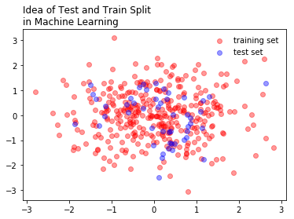
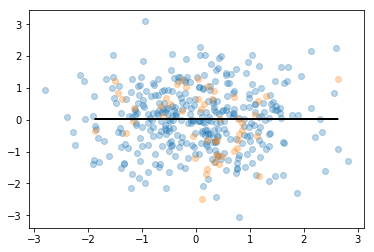
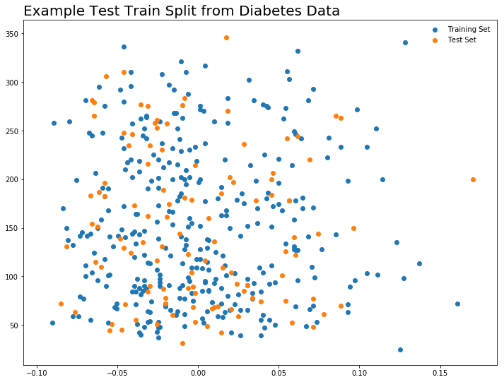
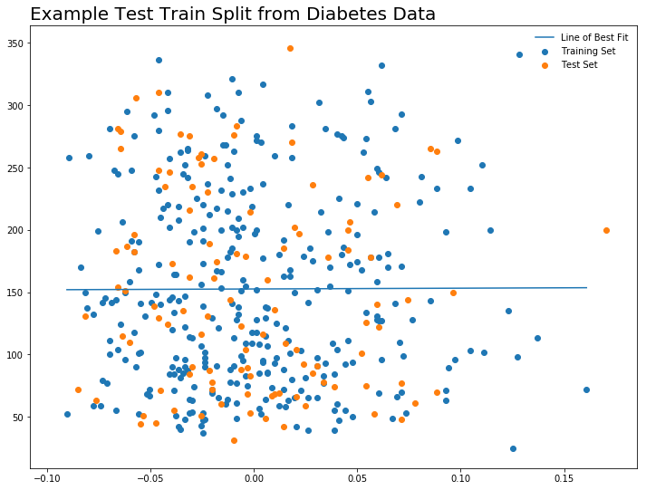
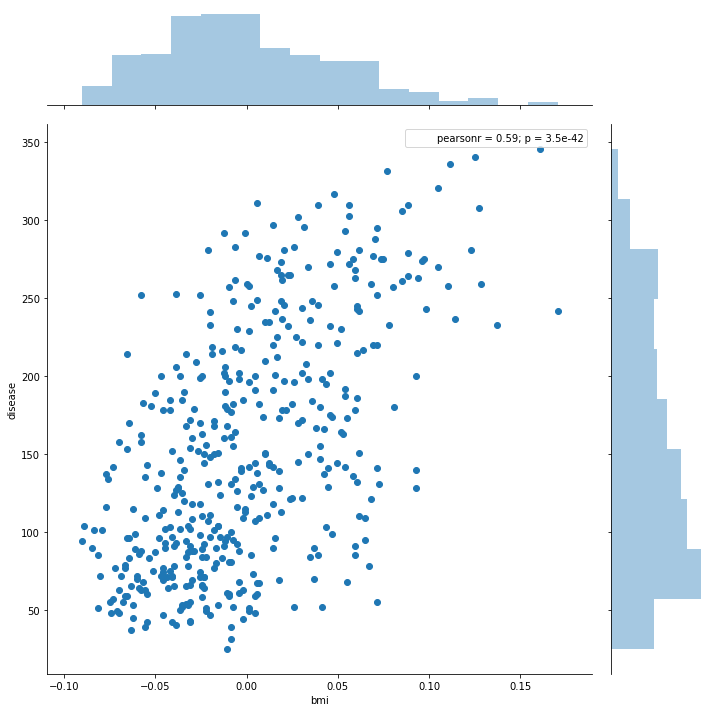
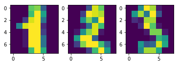
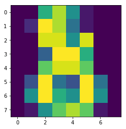

In [1]:
%matplotlib inline
import matplotlib.pyplot as plt
import numpy as np
import pandas as pd
Intro to Machine Learning¶
One of the main ideas of machine learning, is to split data into testing and training sets. These sets are used to develop the model, and subsequently test its accuracy. Later, we will repeat this process a number of times to get an even better model. Machine learning can be thought of as representing a philosophy to model building, where we improve our models by iteratively building the model and testing it’s performance on held out data.
In [2]:
x = np.random.randn(400)
y = np.random.randn(400)
In [3]:
x.shape
Out[3]:
(400,)
In [4]:
plt.scatter(x[:350], y[:350], color = 'red', alpha = 0.4, label = 'training set')
plt.scatter(x[350:], y[350:], color = 'blue', alpha = 0.4, label = 'test set')
plt.legend(loc = 'best', frameon = False)
plt.title("Idea of Test and Train Split \nin Machine Learning", loc = 'left')
Out[4]:
Text(0,1,'Idea of Test and Train Split \nin Machine Learning')

In [5]:
X_train, x_test, y_train, y_test = x[:350].reshape(-1,1), x[350:].reshape(-1,1), y[:350].reshape(-1,1), y[350:].reshape(-1,1)
In [6]:
X_train.shape
Out[6]:
(350, 1)
In [7]:
from sklearn import linear_model
In [8]:
reg = linear_model.LinearRegression()
reg.fit(X_train, y_train)
Out[8]:
LinearRegression(copy_X=True, fit_intercept=True, n_jobs=1, normalize=False)
In [9]:
reg.coef_
Out[9]:
array([[-0.0010095]])
In [10]:
y_predict = reg.predict(x_test.reshape(-1,1))
In [11]:
plt.scatter(X_train, y_train, alpha = 0.3)
plt.scatter(x_test, y_test, alpha = 0.3)
plt.plot(x_test, y_predict, color = 'black')
Out[11]:
[<matplotlib.lines.Line2D at 0x1a159ebcf8>]

Regression Example: Loading and Structuring Data¶
Predicting level of diabetes based on body mass index measures.
In [16]:
%matplotlib inline
import matplotlib.pyplot as plt
import numpy as np
from sklearn import datasets, linear_model
from sklearn.metrics import mean_squared_error, r2_score
In [17]:
diabetes = datasets.load_diabetes()
In [18]:
diabetes
Out[18]:
{'DESCR': 'Diabetes dataset\n================\n\nNotes\n-----\n\nTen baseline variables, age, sex, body mass index, average blood\npressure, and six blood serum measurements were obtained for each of n =\n442 diabetes patients, as well as the response of interest, a\nquantitative measure of disease progression one year after baseline.\n\nData Set Characteristics:\n\n :Number of Instances: 442\n\n :Number of Attributes: First 10 columns are numeric predictive values\n\n :Target: Column 11 is a quantitative measure of disease progression one year after baseline\n\n :Attributes:\n :Age:\n :Sex:\n :Body mass index:\n :Average blood pressure:\n :S1:\n :S2:\n :S3:\n :S4:\n :S5:\n :S6:\n\nNote: Each of these 10 feature variables have been mean centered and scaled by the standard deviation times `n_samples` (i.e. the sum of squares of each column totals 1).\n\nSource URL:\nhttp://www4.stat.ncsu.edu/~boos/var.select/diabetes.html\n\nFor more information see:\nBradley Efron, Trevor Hastie, Iain Johnstone and Robert Tibshirani (2004) "Least Angle Regression," Annals of Statistics (with discussion), 407-499.\n(http://web.stanford.edu/~hastie/Papers/LARS/LeastAngle_2002.pdf)\n',
'data': array([[ 0.03807591, 0.05068012, 0.06169621, ..., -0.00259226,
0.01990842, -0.01764613],
[-0.00188202, -0.04464164, -0.05147406, ..., -0.03949338,
-0.06832974, -0.09220405],
[ 0.08529891, 0.05068012, 0.04445121, ..., -0.00259226,
0.00286377, -0.02593034],
...,
[ 0.04170844, 0.05068012, -0.01590626, ..., -0.01107952,
-0.04687948, 0.01549073],
[-0.04547248, -0.04464164, 0.03906215, ..., 0.02655962,
0.04452837, -0.02593034],
[-0.04547248, -0.04464164, -0.0730303 , ..., -0.03949338,
-0.00421986, 0.00306441]]),
'feature_names': ['age',
'sex',
'bmi',
'bp',
's1',
's2',
's3',
's4',
's5',
's6'],
'target': array([ 151., 75., 141., 206., 135., 97., 138., 63., 110.,
310., 101., 69., 179., 185., 118., 171., 166., 144.,
97., 168., 68., 49., 68., 245., 184., 202., 137.,
85., 131., 283., 129., 59., 341., 87., 65., 102.,
265., 276., 252., 90., 100., 55., 61., 92., 259.,
53., 190., 142., 75., 142., 155., 225., 59., 104.,
182., 128., 52., 37., 170., 170., 61., 144., 52.,
128., 71., 163., 150., 97., 160., 178., 48., 270.,
202., 111., 85., 42., 170., 200., 252., 113., 143.,
51., 52., 210., 65., 141., 55., 134., 42., 111.,
98., 164., 48., 96., 90., 162., 150., 279., 92.,
83., 128., 102., 302., 198., 95., 53., 134., 144.,
232., 81., 104., 59., 246., 297., 258., 229., 275.,
281., 179., 200., 200., 173., 180., 84., 121., 161.,
99., 109., 115., 268., 274., 158., 107., 83., 103.,
272., 85., 280., 336., 281., 118., 317., 235., 60.,
174., 259., 178., 128., 96., 126., 288., 88., 292.,
71., 197., 186., 25., 84., 96., 195., 53., 217.,
172., 131., 214., 59., 70., 220., 268., 152., 47.,
74., 295., 101., 151., 127., 237., 225., 81., 151.,
107., 64., 138., 185., 265., 101., 137., 143., 141.,
79., 292., 178., 91., 116., 86., 122., 72., 129.,
142., 90., 158., 39., 196., 222., 277., 99., 196.,
202., 155., 77., 191., 70., 73., 49., 65., 263.,
248., 296., 214., 185., 78., 93., 252., 150., 77.,
208., 77., 108., 160., 53., 220., 154., 259., 90.,
246., 124., 67., 72., 257., 262., 275., 177., 71.,
47., 187., 125., 78., 51., 258., 215., 303., 243.,
91., 150., 310., 153., 346., 63., 89., 50., 39.,
103., 308., 116., 145., 74., 45., 115., 264., 87.,
202., 127., 182., 241., 66., 94., 283., 64., 102.,
200., 265., 94., 230., 181., 156., 233., 60., 219.,
80., 68., 332., 248., 84., 200., 55., 85., 89.,
31., 129., 83., 275., 65., 198., 236., 253., 124.,
44., 172., 114., 142., 109., 180., 144., 163., 147.,
97., 220., 190., 109., 191., 122., 230., 242., 248.,
249., 192., 131., 237., 78., 135., 244., 199., 270.,
164., 72., 96., 306., 91., 214., 95., 216., 263.,
178., 113., 200., 139., 139., 88., 148., 88., 243.,
71., 77., 109., 272., 60., 54., 221., 90., 311.,
281., 182., 321., 58., 262., 206., 233., 242., 123.,
167., 63., 197., 71., 168., 140., 217., 121., 235.,
245., 40., 52., 104., 132., 88., 69., 219., 72.,
201., 110., 51., 277., 63., 118., 69., 273., 258.,
43., 198., 242., 232., 175., 93., 168., 275., 293.,
281., 72., 140., 189., 181., 209., 136., 261., 113.,
131., 174., 257., 55., 84., 42., 146., 212., 233.,
91., 111., 152., 120., 67., 310., 94., 183., 66.,
173., 72., 49., 64., 48., 178., 104., 132., 220., 57.])}
In [19]:
diabetes.DESCR
Out[19]:
'Diabetes dataset\n================\n\nNotes\n-----\n\nTen baseline variables, age, sex, body mass index, average blood\npressure, and six blood serum measurements were obtained for each of n =\n442 diabetes patients, as well as the response of interest, a\nquantitative measure of disease progression one year after baseline.\n\nData Set Characteristics:\n\n :Number of Instances: 442\n\n :Number of Attributes: First 10 columns are numeric predictive values\n\n :Target: Column 11 is a quantitative measure of disease progression one year after baseline\n\n :Attributes:\n :Age:\n :Sex:\n :Body mass index:\n :Average blood pressure:\n :S1:\n :S2:\n :S3:\n :S4:\n :S5:\n :S6:\n\nNote: Each of these 10 feature variables have been mean centered and scaled by the standard deviation times `n_samples` (i.e. the sum of squares of each column totals 1).\n\nSource URL:\nhttp://www4.stat.ncsu.edu/~boos/var.select/diabetes.html\n\nFor more information see:\nBradley Efron, Trevor Hastie, Iain Johnstone and Robert Tibshirani (2004) "Least Angle Regression," Annals of Statistics (with discussion), 407-499.\n(http://web.stanford.edu/~hastie/Papers/LARS/LeastAngle_2002.pdf)\n'
In [20]:
diabetes.data
Out[20]:
array([[ 0.03807591, 0.05068012, 0.06169621, ..., -0.00259226,
0.01990842, -0.01764613],
[-0.00188202, -0.04464164, -0.05147406, ..., -0.03949338,
-0.06832974, -0.09220405],
[ 0.08529891, 0.05068012, 0.04445121, ..., -0.00259226,
0.00286377, -0.02593034],
...,
[ 0.04170844, 0.05068012, -0.01590626, ..., -0.01107952,
-0.04687948, 0.01549073],
[-0.04547248, -0.04464164, 0.03906215, ..., 0.02655962,
0.04452837, -0.02593034],
[-0.04547248, -0.04464164, -0.0730303 , ..., -0.03949338,
-0.00421986, 0.00306441]])
In [34]:
diabetes.feature_names[2]
Out[34]:
'bmi'
In [21]:
diabetes.data[:, np.newaxis, 2]
Out[21]:
array([[ 0.06169621],
[-0.05147406],
[ 0.04445121],
[-0.01159501],
[-0.03638469],
[-0.04069594],
[-0.04716281],
[-0.00189471],
[ 0.06169621],
[ 0.03906215],
[-0.08380842],
[ 0.01750591],
[-0.02884001],
[-0.00189471],
[-0.02560657],
[-0.01806189],
[ 0.04229559],
[ 0.01211685],
[-0.0105172 ],
[-0.01806189],
[-0.05686312],
[-0.02237314],
[-0.00405033],
[ 0.06061839],
[ 0.03582872],
[-0.01267283],
[-0.07734155],
[ 0.05954058],
[-0.02129532],
[-0.00620595],
[ 0.04445121],
[-0.06548562],
[ 0.12528712],
[-0.05039625],
[-0.06332999],
[-0.03099563],
[ 0.02289497],
[ 0.01103904],
[ 0.07139652],
[ 0.01427248],
[-0.00836158],
[-0.06764124],
[-0.0105172 ],
[-0.02345095],
[ 0.06816308],
[-0.03530688],
[-0.01159501],
[-0.0730303 ],
[-0.04177375],
[ 0.01427248],
[-0.00728377],
[ 0.0164281 ],
[-0.00943939],
[-0.01590626],
[ 0.0250506 ],
[-0.04931844],
[ 0.04121778],
[-0.06332999],
[-0.06440781],
[-0.02560657],
[-0.00405033],
[ 0.00457217],
[-0.00728377],
[-0.0374625 ],
[-0.02560657],
[-0.02452876],
[-0.01806189],
[-0.01482845],
[-0.02991782],
[-0.046085 ],
[-0.06979687],
[ 0.03367309],
[-0.00405033],
[-0.02021751],
[ 0.00241654],
[-0.03099563],
[ 0.02828403],
[-0.03638469],
[-0.05794093],
[-0.0374625 ],
[ 0.01211685],
[-0.02237314],
[-0.03530688],
[ 0.00996123],
[-0.03961813],
[ 0.07139652],
[-0.07518593],
[-0.00620595],
[-0.04069594],
[-0.04824063],
[-0.02560657],
[ 0.0519959 ],
[ 0.00457217],
[-0.06440781],
[-0.01698407],
[-0.05794093],
[ 0.00996123],
[ 0.08864151],
[-0.00512814],
[-0.06440781],
[ 0.01750591],
[-0.04500719],
[ 0.02828403],
[ 0.04121778],
[ 0.06492964],
[-0.03207344],
[-0.07626374],
[ 0.04984027],
[ 0.04552903],
[-0.00943939],
[-0.03207344],
[ 0.00457217],
[ 0.02073935],
[ 0.01427248],
[ 0.11019775],
[ 0.00133873],
[ 0.05846277],
[-0.02129532],
[-0.0105172 ],
[-0.04716281],
[ 0.00457217],
[ 0.01750591],
[ 0.08109682],
[ 0.0347509 ],
[ 0.02397278],
[-0.00836158],
[-0.06117437],
[-0.00189471],
[-0.06225218],
[ 0.0164281 ],
[ 0.09618619],
[-0.06979687],
[-0.02129532],
[-0.05362969],
[ 0.0433734 ],
[ 0.05630715],
[-0.0816528 ],
[ 0.04984027],
[ 0.11127556],
[ 0.06169621],
[ 0.01427248],
[ 0.04768465],
[ 0.01211685],
[ 0.00564998],
[ 0.04660684],
[ 0.12852056],
[ 0.05954058],
[ 0.09295276],
[ 0.01535029],
[-0.00512814],
[ 0.0703187 ],
[-0.00405033],
[-0.00081689],
[-0.04392938],
[ 0.02073935],
[ 0.06061839],
[-0.0105172 ],
[-0.03315126],
[-0.06548562],
[ 0.0433734 ],
[-0.06225218],
[ 0.06385183],
[ 0.03043966],
[ 0.07247433],
[-0.0191397 ],
[-0.06656343],
[-0.06009656],
[ 0.06924089],
[ 0.05954058],
[-0.02668438],
[-0.02021751],
[-0.046085 ],
[ 0.07139652],
[-0.07949718],
[ 0.00996123],
[-0.03854032],
[ 0.01966154],
[ 0.02720622],
[-0.00836158],
[-0.01590626],
[ 0.00457217],
[-0.04285156],
[ 0.00564998],
[-0.03530688],
[ 0.02397278],
[-0.01806189],
[ 0.04229559],
[-0.0547075 ],
[-0.00297252],
[-0.06656343],
[-0.01267283],
[-0.04177375],
[-0.03099563],
[-0.00512814],
[-0.05901875],
[ 0.0250506 ],
[-0.046085 ],
[ 0.00349435],
[ 0.05415152],
[-0.04500719],
[-0.05794093],
[-0.05578531],
[ 0.00133873],
[ 0.03043966],
[ 0.00672779],
[ 0.04660684],
[ 0.02612841],
[ 0.04552903],
[ 0.04013997],
[-0.01806189],
[ 0.01427248],
[ 0.03690653],
[ 0.00349435],
[-0.07087468],
[-0.03315126],
[ 0.09403057],
[ 0.03582872],
[ 0.03151747],
[-0.06548562],
[-0.04177375],
[-0.03961813],
[-0.03854032],
[-0.02560657],
[-0.02345095],
[-0.06656343],
[ 0.03259528],
[-0.046085 ],
[-0.02991782],
[-0.01267283],
[-0.01590626],
[ 0.07139652],
[-0.03099563],
[ 0.00026092],
[ 0.03690653],
[ 0.03906215],
[-0.01482845],
[ 0.00672779],
[-0.06871905],
[-0.00943939],
[ 0.01966154],
[ 0.07462995],
[-0.00836158],
[-0.02345095],
[-0.046085 ],
[ 0.05415152],
[-0.03530688],
[-0.03207344],
[-0.0816528 ],
[ 0.04768465],
[ 0.06061839],
[ 0.05630715],
[ 0.09834182],
[ 0.05954058],
[ 0.03367309],
[ 0.05630715],
[-0.06548562],
[ 0.16085492],
[-0.05578531],
[-0.02452876],
[-0.03638469],
[-0.00836158],
[-0.04177375],
[ 0.12744274],
[-0.07734155],
[ 0.02828403],
[-0.02560657],
[-0.06225218],
[-0.00081689],
[ 0.08864151],
[-0.03207344],
[ 0.03043966],
[ 0.00888341],
[ 0.00672779],
[-0.02021751],
[-0.02452876],
[-0.01159501],
[ 0.02612841],
[-0.05901875],
[-0.03638469],
[-0.02452876],
[ 0.01858372],
[-0.0902753 ],
[-0.00512814],
[-0.05255187],
[-0.02237314],
[-0.02021751],
[-0.0547075 ],
[-0.00620595],
[-0.01698407],
[ 0.05522933],
[ 0.07678558],
[ 0.01858372],
[-0.02237314],
[ 0.09295276],
[-0.03099563],
[ 0.03906215],
[-0.06117437],
[-0.00836158],
[-0.0374625 ],
[-0.01375064],
[ 0.07355214],
[-0.02452876],
[ 0.03367309],
[ 0.0347509 ],
[-0.03854032],
[-0.03961813],
[-0.00189471],
[-0.03099563],
[-0.046085 ],
[ 0.00133873],
[ 0.06492964],
[ 0.04013997],
[-0.02345095],
[ 0.05307371],
[ 0.04013997],
[-0.02021751],
[ 0.01427248],
[-0.03422907],
[ 0.00672779],
[ 0.00457217],
[ 0.03043966],
[ 0.0519959 ],
[ 0.06169621],
[-0.00728377],
[ 0.00564998],
[ 0.05415152],
[-0.00836158],
[ 0.114509 ],
[ 0.06708527],
[-0.05578531],
[ 0.03043966],
[-0.02560657],
[ 0.10480869],
[-0.00620595],
[-0.04716281],
[-0.04824063],
[ 0.08540807],
[-0.01267283],
[-0.03315126],
[-0.00728377],
[-0.01375064],
[ 0.05954058],
[ 0.02181716],
[ 0.01858372],
[-0.01159501],
[-0.00297252],
[ 0.01750591],
[-0.02991782],
[-0.02021751],
[-0.05794093],
[ 0.06061839],
[-0.04069594],
[-0.07195249],
[-0.05578531],
[ 0.04552903],
[-0.00943939],
[-0.03315126],
[ 0.04984027],
[-0.08488624],
[ 0.00564998],
[ 0.02073935],
[-0.00728377],
[ 0.10480869],
[-0.02452876],
[-0.00620595],
[-0.03854032],
[ 0.13714305],
[ 0.17055523],
[ 0.00241654],
[ 0.03798434],
[-0.05794093],
[-0.00943939],
[-0.02345095],
[-0.0105172 ],
[-0.03422907],
[-0.00297252],
[ 0.06816308],
[ 0.00996123],
[ 0.00241654],
[-0.03854032],
[ 0.02612841],
[-0.08919748],
[ 0.06061839],
[-0.02884001],
[-0.02991782],
[-0.0191397 ],
[-0.04069594],
[ 0.01535029],
[-0.02452876],
[ 0.00133873],
[ 0.06924089],
[-0.06979687],
[-0.02991782],
[-0.046085 ],
[ 0.01858372],
[ 0.00133873],
[-0.03099563],
[-0.00405033],
[ 0.01535029],
[ 0.02289497],
[ 0.04552903],
[-0.04500719],
[-0.03315126],
[ 0.097264 ],
[ 0.05415152],
[ 0.12313149],
[-0.08057499],
[ 0.09295276],
[-0.05039625],
[-0.01159501],
[-0.0277622 ],
[ 0.05846277],
[ 0.08540807],
[-0.00081689],
[ 0.00672779],
[ 0.00888341],
[ 0.08001901],
[ 0.07139652],
[-0.02452876],
[-0.0547075 ],
[-0.03638469],
[ 0.0164281 ],
[ 0.07786339],
[-0.03961813],
[ 0.01103904],
[-0.04069594],
[-0.03422907],
[ 0.00564998],
[ 0.08864151],
[-0.03315126],
[-0.05686312],
[-0.03099563],
[ 0.05522933],
[-0.06009656],
[ 0.00133873],
[-0.02345095],
[-0.07410811],
[ 0.01966154],
[-0.01590626],
[-0.01590626],
[ 0.03906215],
[-0.0730303 ]])
In [22]:
diabetes_X = diabetes.data[:, np.newaxis, 2]
In [23]:
diabetes.target
Out[23]:
array([ 151., 75., 141., 206., 135., 97., 138., 63., 110.,
310., 101., 69., 179., 185., 118., 171., 166., 144.,
97., 168., 68., 49., 68., 245., 184., 202., 137.,
85., 131., 283., 129., 59., 341., 87., 65., 102.,
265., 276., 252., 90., 100., 55., 61., 92., 259.,
53., 190., 142., 75., 142., 155., 225., 59., 104.,
182., 128., 52., 37., 170., 170., 61., 144., 52.,
128., 71., 163., 150., 97., 160., 178., 48., 270.,
202., 111., 85., 42., 170., 200., 252., 113., 143.,
51., 52., 210., 65., 141., 55., 134., 42., 111.,
98., 164., 48., 96., 90., 162., 150., 279., 92.,
83., 128., 102., 302., 198., 95., 53., 134., 144.,
232., 81., 104., 59., 246., 297., 258., 229., 275.,
281., 179., 200., 200., 173., 180., 84., 121., 161.,
99., 109., 115., 268., 274., 158., 107., 83., 103.,
272., 85., 280., 336., 281., 118., 317., 235., 60.,
174., 259., 178., 128., 96., 126., 288., 88., 292.,
71., 197., 186., 25., 84., 96., 195., 53., 217.,
172., 131., 214., 59., 70., 220., 268., 152., 47.,
74., 295., 101., 151., 127., 237., 225., 81., 151.,
107., 64., 138., 185., 265., 101., 137., 143., 141.,
79., 292., 178., 91., 116., 86., 122., 72., 129.,
142., 90., 158., 39., 196., 222., 277., 99., 196.,
202., 155., 77., 191., 70., 73., 49., 65., 263.,
248., 296., 214., 185., 78., 93., 252., 150., 77.,
208., 77., 108., 160., 53., 220., 154., 259., 90.,
246., 124., 67., 72., 257., 262., 275., 177., 71.,
47., 187., 125., 78., 51., 258., 215., 303., 243.,
91., 150., 310., 153., 346., 63., 89., 50., 39.,
103., 308., 116., 145., 74., 45., 115., 264., 87.,
202., 127., 182., 241., 66., 94., 283., 64., 102.,
200., 265., 94., 230., 181., 156., 233., 60., 219.,
80., 68., 332., 248., 84., 200., 55., 85., 89.,
31., 129., 83., 275., 65., 198., 236., 253., 124.,
44., 172., 114., 142., 109., 180., 144., 163., 147.,
97., 220., 190., 109., 191., 122., 230., 242., 248.,
249., 192., 131., 237., 78., 135., 244., 199., 270.,
164., 72., 96., 306., 91., 214., 95., 216., 263.,
178., 113., 200., 139., 139., 88., 148., 88., 243.,
71., 77., 109., 272., 60., 54., 221., 90., 311.,
281., 182., 321., 58., 262., 206., 233., 242., 123.,
167., 63., 197., 71., 168., 140., 217., 121., 235.,
245., 40., 52., 104., 132., 88., 69., 219., 72.,
201., 110., 51., 277., 63., 118., 69., 273., 258.,
43., 198., 242., 232., 175., 93., 168., 275., 293.,
281., 72., 140., 189., 181., 209., 136., 261., 113.,
131., 174., 257., 55., 84., 42., 146., 212., 233.,
91., 111., 152., 120., 67., 310., 94., 183., 66.,
173., 72., 49., 64., 48., 178., 104., 132., 220., 57.])
In [24]:
diabetes_y = diabetes.target
In [25]:
from sklearn.model_selection import train_test_split
In [26]:
X_train, x_test = train_test_split(diabetes_X)
y_train, y_test = train_test_split(diabetes_y)
In [32]:
plt.figure(figsize = (12, 9))
plt.scatter(X_train, y_train, label = 'Training Set')
plt.scatter(x_test, y_test, label = 'Test Set')
plt.legend(frameon = False)
plt.title("Example Test Train Split from Diabetes Data", loc = 'left', size = 20)
Out[32]:
Text(0,1,'Example Test Train Split from Diabetes Data')

Linear Regression: Fitting and Evaluating the Model¶
In [35]:
regr = linear_model.LinearRegression()
In [36]:
regr.fit(X_train, y_train)
Out[36]:
LinearRegression(copy_X=True, fit_intercept=True, n_jobs=1, normalize=False)
In [38]:
predictions = regr.predict(x_test)
In [40]:
print("The coefficients of the model are: \n", regr.coef_)
The coefficients of the model are:
[ 6.29641819]
In [41]:
print("The intercept of the model are: \n", regr.intercept_)
The intercept of the model are:
152.512205614
In [43]:
print("The Equation for the Line of Best Fit is \n y = ", regr.coef_, 'x +', regr.intercept_)
The Equation for the Line of Best Fit is
y = [ 6.29641819] x + 152.512205614
In [44]:
def l(x):
return regr.coef_*x + regr.intercept_
In [45]:
l(30)
Out[45]:
array([ 341.40475121])
In [46]:
x = np.linspace(min(X_train), max(X_train), 1000)
In [47]:
plt.figure(figsize = (12, 9))
plt.scatter(X_train, y_train, label = 'Training Set')
plt.scatter(x_test, y_test, label = 'Test Set')
plt.plot(x, l(x), label = 'Line of Best Fit')
plt.legend(frameon = False)
plt.title("Example Test Train Split from Diabetes Data", loc = 'left', size = 20)
Out[47]:
Text(0,1,'Example Test Train Split from Diabetes Data')

In [48]:
print("The Mean Squared Error of the model is", mean_squared_error(y_test, predictions))
The Mean Squared Error of the model is 6126.13411338
In [49]:
print("The Variance Score is ", r2_score(y_test, predictions))
The Variance Score is -0.000950748287665
In [51]:
regr.get_params
Out[51]:
<bound method BaseEstimator.get_params of LinearRegression(copy_X=True, fit_intercept=True, n_jobs=1, normalize=False)>
Using StatsModels and Seaborn¶
In [57]:
import statsmodels.api as sm
import statsmodels.formula.api as smf
import pandas as pd
In [60]:
df = pd.DataFrame()
In [67]:
df['bmi'] = diabetes.data[:, 2]
In [68]:
df['disease'] = diabetes.target
In [69]:
df.head()
Out[69]:
| bmi | disease | |
|---|---|---|
| 0 | 0.061696 | 151.0 |
| 1 | -0.051474 | 75.0 |
| 2 | 0.044451 | 141.0 |
| 3 | -0.011595 | 206.0 |
| 4 | -0.036385 | 135.0 |
In [73]:
len(df['bmi'])
Out[73]:
442
In [75]:
results = smf.ols('disease ~ bmi', data = df).fit()
In [76]:
print(results.summary())
OLS Regression Results
==============================================================================
Dep. Variable: disease R-squared: 0.344
Model: OLS Adj. R-squared: 0.342
Method: Least Squares F-statistic: 230.7
Date: Sat, 10 Feb 2018 Prob (F-statistic): 3.47e-42
Time: 14:16:19 Log-Likelihood: -2454.0
No. Observations: 442 AIC: 4912.
Df Residuals: 440 BIC: 4920.
Df Model: 1
Covariance Type: nonrobust
==============================================================================
coef std err t P>|t| [0.025 0.975]
------------------------------------------------------------------------------
Intercept 152.1335 2.974 51.162 0.000 146.289 157.978
bmi 949.4353 62.515 15.187 0.000 826.570 1072.301
==============================================================================
Omnibus: 11.674 Durbin-Watson: 1.848
Prob(Omnibus): 0.003 Jarque-Bera (JB): 7.310
Skew: 0.156 Prob(JB): 0.0259
Kurtosis: 2.453 Cond. No. 21.0
==============================================================================
Warnings:
[1] Standard Errors assume that the covariance matrix of the errors is correctly specified.
In [77]:
df2 = df[:300]
In [78]:
df2.head()
Out[78]:
| bmi | disease | |
|---|---|---|
| 0 | 0.061696 | 151.0 |
| 1 | -0.051474 | 75.0 |
| 2 | 0.044451 | 141.0 |
| 3 | -0.011595 | 206.0 |
| 4 | -0.036385 | 135.0 |
In [79]:
df2b = df[300:]
In [80]:
df2b.head()
Out[80]:
| bmi | disease | |
|---|---|---|
| 300 | 0.073552 | 275.0 |
| 301 | -0.024529 | 65.0 |
| 302 | 0.033673 | 198.0 |
| 303 | 0.034751 | 236.0 |
| 304 | -0.038540 | 253.0 |
In [83]:
split_results = smf.ols('disease ~ bmi', data = df2).fit()
In [84]:
print(split_results.summary())
OLS Regression Results
==============================================================================
Dep. Variable: disease R-squared: 0.342
Model: OLS Adj. R-squared: 0.340
Method: Least Squares F-statistic: 154.8
Date: Sat, 10 Feb 2018 Prob (F-statistic): 6.61e-29
Time: 14:18:03 Log-Likelihood: -1668.4
No. Observations: 300 AIC: 3341.
Df Residuals: 298 BIC: 3348.
Df Model: 1
Covariance Type: nonrobust
==============================================================================
coef std err t P>|t| [0.025 0.975]
------------------------------------------------------------------------------
Intercept 151.0306 3.651 41.372 0.000 143.846 158.215
bmi 975.5736 78.405 12.443 0.000 821.276 1129.872
==============================================================================
Omnibus: 9.498 Durbin-Watson: 1.764
Prob(Omnibus): 0.009 Jarque-Bera (JB): 6.672
Skew: 0.238 Prob(JB): 0.0356
Kurtosis: 2.446 Cond. No. 21.5
==============================================================================
Warnings:
[1] Standard Errors assume that the covariance matrix of the errors is correctly specified.
In [87]:
predictions = split_results.predict(df2b['bmi'])
In [88]:
predictions[:10]
Out[88]:
300 222.786110
301 127.100973
302 183.881164
303 184.932649
304 113.431668
305 112.380183
306 149.182158
307 120.792063
308 106.071273
309 152.336613
dtype: float64
In [95]:
import seaborn as sns
sns.jointplot('bmi', 'disease', data = df, size = 10)
Out[95]:
<seaborn.axisgrid.JointGrid at 0x1c216fc438>

Other Examples of Machine Learning¶
- What category does this belong to?
- What is this a picture of?
In [12]:
from sklearn import datasets
In [13]:
iris = datasets.load_iris()
digits = datasets.load_digits()
In [14]:
print(digits.data)
[[ 0. 0. 5. ..., 0. 0. 0.]
[ 0. 0. 0. ..., 10. 0. 0.]
[ 0. 0. 0. ..., 16. 9. 0.]
...,
[ 0. 0. 1. ..., 6. 0. 0.]
[ 0. 0. 2. ..., 12. 0. 0.]
[ 0. 0. 10. ..., 12. 1. 0.]]
In [15]:
digits.target
Out[15]:
array([0, 1, 2, ..., 8, 9, 8])
In [16]:
digits.images[0]
Out[16]:
array([[ 0., 0., 5., 13., 9., 1., 0., 0.],
[ 0., 0., 13., 15., 10., 15., 5., 0.],
[ 0., 3., 15., 2., 0., 11., 8., 0.],
[ 0., 4., 12., 0., 0., 8., 8., 0.],
[ 0., 5., 8., 0., 0., 9., 8., 0.],
[ 0., 4., 11., 0., 1., 12., 7., 0.],
[ 0., 2., 14., 5., 10., 12., 0., 0.],
[ 0., 0., 6., 13., 10., 0., 0., 0.]])
In [17]:
iris.data[:5]
Out[17]:
array([[ 5.1, 3.5, 1.4, 0.2],
[ 4.9, 3. , 1.4, 0.2],
[ 4.7, 3.2, 1.3, 0.2],
[ 4.6, 3.1, 1.5, 0.2],
[ 5. , 3.6, 1.4, 0.2]])
In [18]:
iris.target
Out[18]:
array([0, 0, 0, 0, 0, 0, 0, 0, 0, 0, 0, 0, 0, 0, 0, 0, 0, 0, 0, 0, 0, 0, 0,
0, 0, 0, 0, 0, 0, 0, 0, 0, 0, 0, 0, 0, 0, 0, 0, 0, 0, 0, 0, 0, 0, 0,
0, 0, 0, 0, 1, 1, 1, 1, 1, 1, 1, 1, 1, 1, 1, 1, 1, 1, 1, 1, 1, 1, 1,
1, 1, 1, 1, 1, 1, 1, 1, 1, 1, 1, 1, 1, 1, 1, 1, 1, 1, 1, 1, 1, 1, 1,
1, 1, 1, 1, 1, 1, 1, 1, 2, 2, 2, 2, 2, 2, 2, 2, 2, 2, 2, 2, 2, 2, 2,
2, 2, 2, 2, 2, 2, 2, 2, 2, 2, 2, 2, 2, 2, 2, 2, 2, 2, 2, 2, 2, 2, 2,
2, 2, 2, 2, 2, 2, 2, 2, 2, 2, 2, 2])
What kind of Flower is This?¶
- K-Means Clustering
- Naive Bayes Classifier
- Decision Tree
In [19]:
plt.subplot(1, 3, 1)
plt.imshow(digits.images[1])
plt.subplot(1, 3, 2)
plt.imshow(digits.images[2])
plt.subplot(1, 3, 3)
plt.imshow(digits.images[3])
Out[19]:
<matplotlib.image.AxesImage at 0x1a15e43630>

Learning and Predicting with Digits¶
Given an image, which digit does it represent? Here, we will fit an estimator to predict which class unknown images belong to. To do this, we will use the support vector classifier.
In [20]:
from sklearn import svm
In [21]:
clf = svm.SVC(gamma = 0.001, C = 100)
In [22]:
#fit on all but last data point
clf.fit(digits.data[:-1], digits.target[:-1])
Out[22]:
SVC(C=100, cache_size=200, class_weight=None, coef0=0.0,
decision_function_shape='ovr', degree=3, gamma=0.001, kernel='rbf',
max_iter=-1, probability=False, random_state=None, shrinking=True,
tol=0.001, verbose=False)
In [23]:
clf.predict(digits.data[-1:])
Out[23]:
array([8])
In [24]:
plt.imshow(digits.images[-1])
Out[24]:
<matplotlib.image.AxesImage at 0x1a15db4278>
